Ritto, Shiga: things to do, food and stays
Ritto · Shiga
Ritto
Highlighted on the Shiga map.
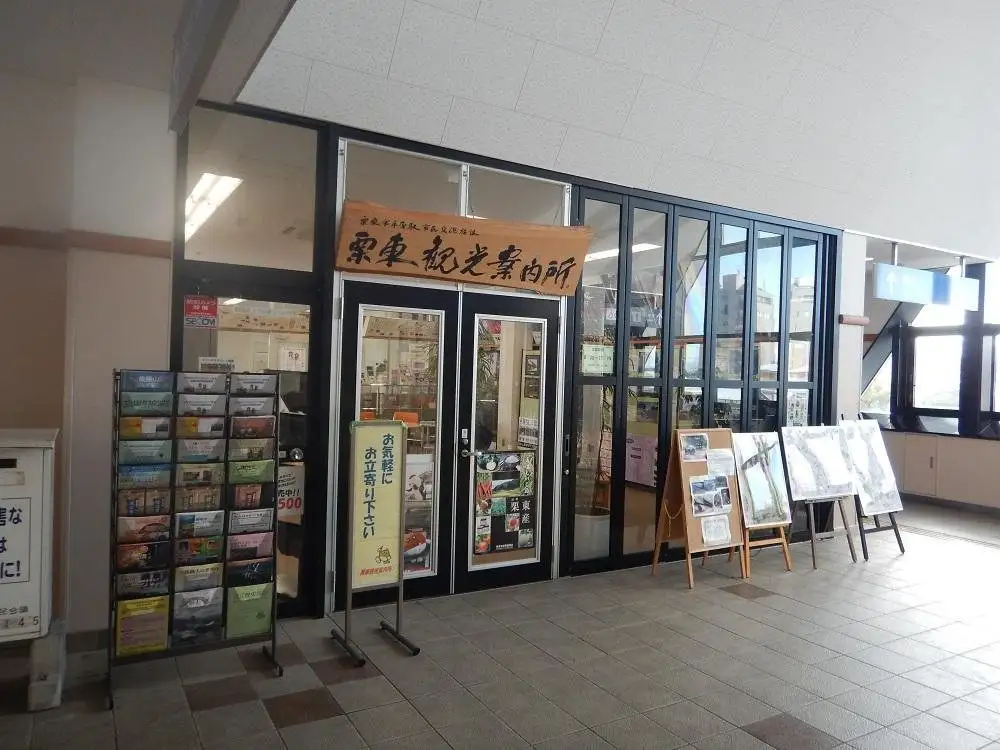
Stay
ホテルルートイン草津栗東 - 栗東インター国道1号 -
Hotel Route Inn Kusatsu Ritto - Ritto Inta Kokudo 1 Go
Hotel in Ohashi, Ritto with buffet meals and breakfast available.
アートリッツホテル
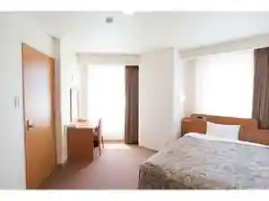
Atorittsu Hotel
こんぜの里バンガロー村
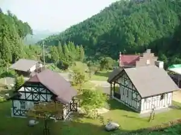
Konzeno Sato Bangaro Mura
Inn in Kan'Onji, Ritto with lakeside location.
Dining
えびすよしよし
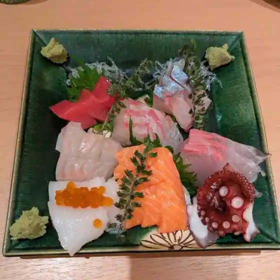
Ebisuyoshiyoshi
ヴィオレット・ステラ
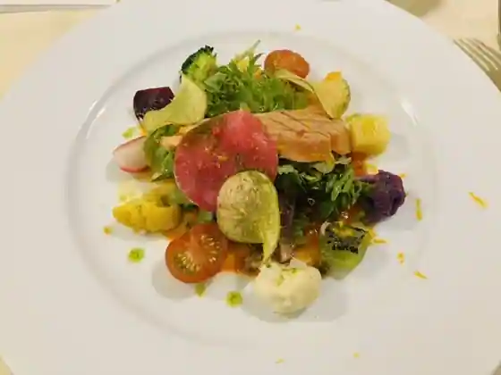
Vioretto Sutera
ル・ゴーシュ・セキ
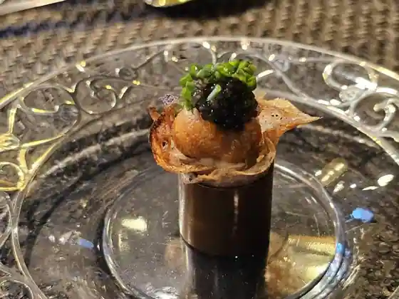
Ru Goshu Seki
自然薯料理 とろりん
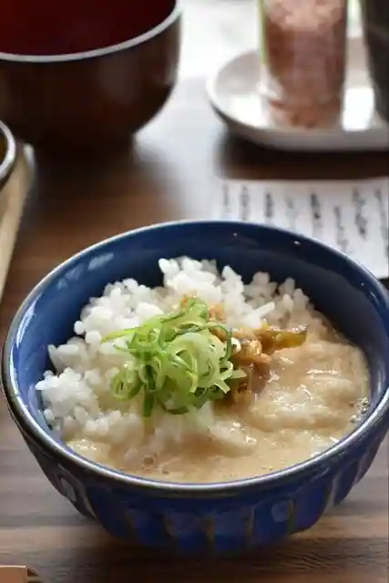
Shizen Sho Ryori Tororin
Orpo
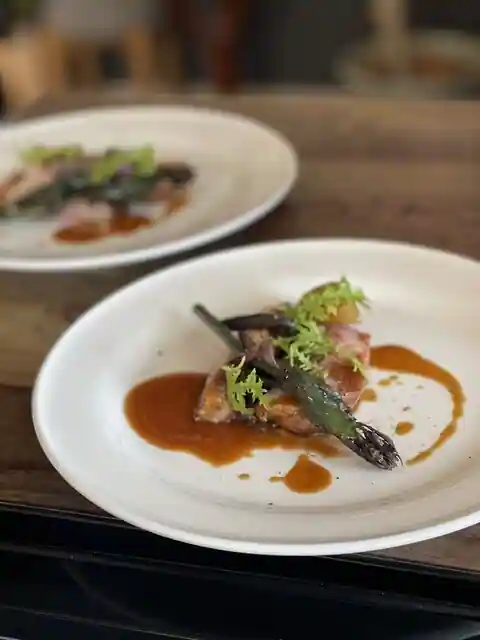
Orpo
ALOHA CAFE Pineapple 草津栗東店
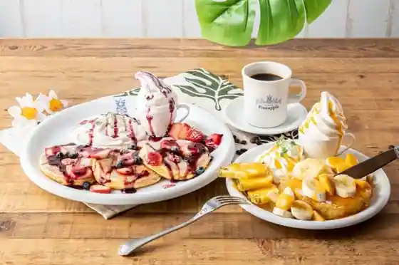
ALOHA CAFE Pineapple Kusatsu Ritto
ラーメン 奏
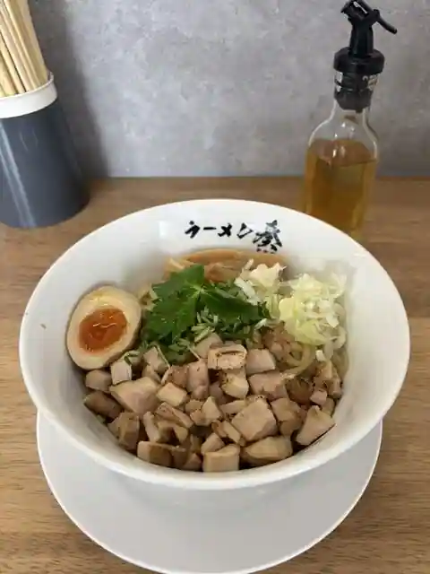
Ramen So
ドラゴンラーメン
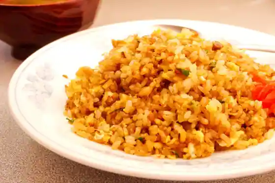
Doragon Ramen
地鶏料理 味千両
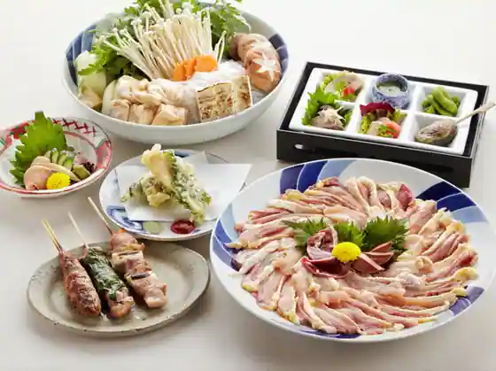
Jidori Ryori Aji Senryo
豚人なかまる 栗東店
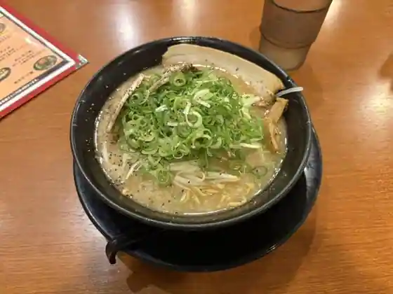
Buta Nin Nakamaru Ritto
快食空間 makanaiya
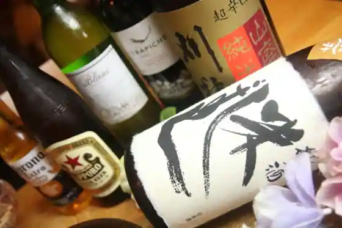
Kaishoku Kukan makanaiya
THE HIDEAWAY FACTORY
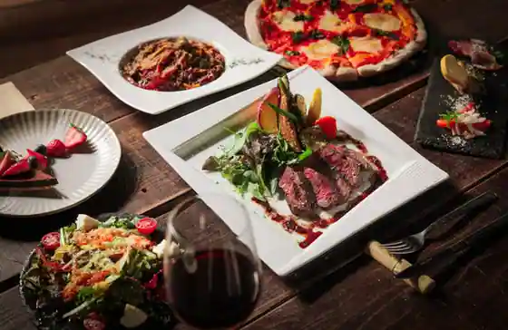
THE HIDEAWAY FACTORY
ハンバーグ亭
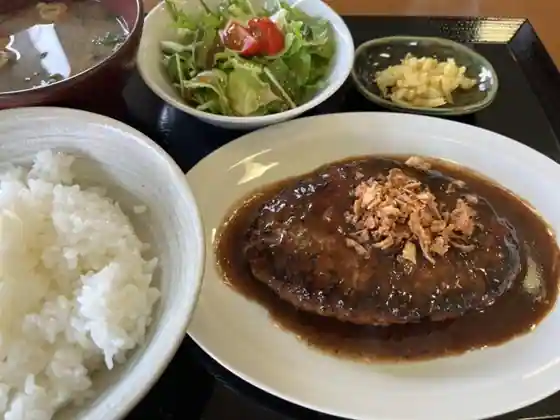
Hamburg Tei
開運うどん 川また
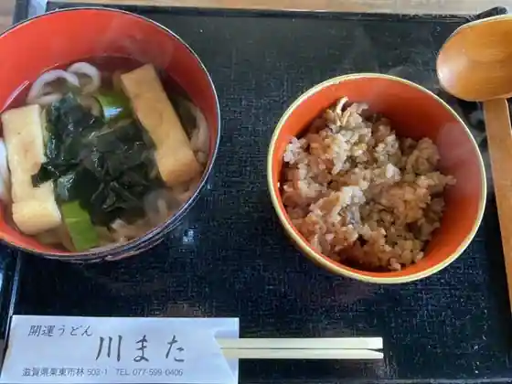
Kaiun Udon Kawa Mata
オモヤキッチン
Omoya Kitchen
広盛園
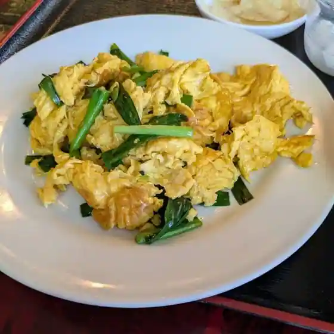
Ko Jo Sono
おさかな家 佐藤
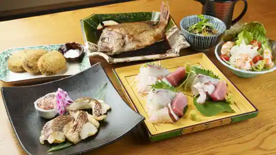
Osakana Ie Sato
開化亭
Kaika Tei
道の駅 アグリの郷栗東
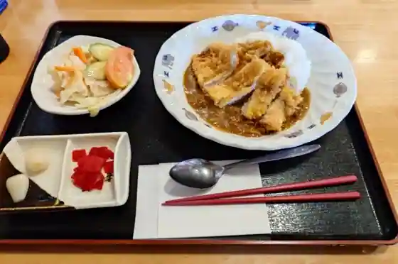
Michi No Eki Aguri No Sato Ritto
ちゃんぽん長崎屋
Chanpon Nagasakiya
ごきげんさん
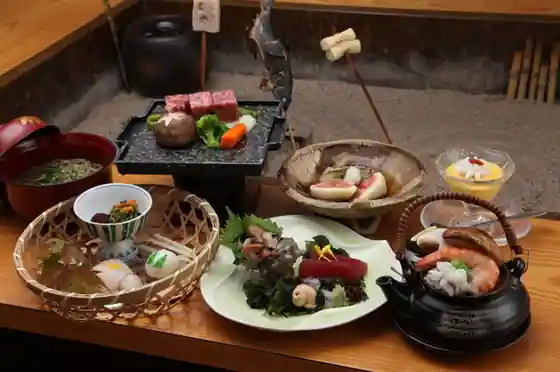
Gokigensan
ジャパンエース ゴルフ倶楽部
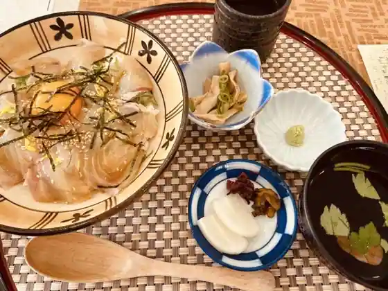
Ja Bakery Esu Gorufu Kurabu
ラーメン旺
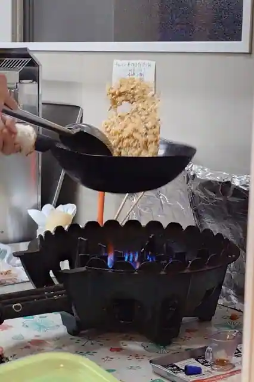
Ramen O
グリル さわい
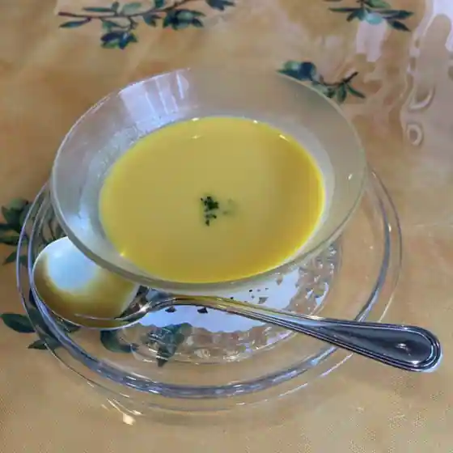
Grill Sawai
Sights
Ritto Shutsudo Bunkazai Center Wada Kofun Park
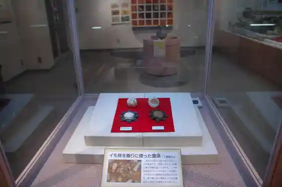
Kagi Jinsho Ato (Eisho Tera)
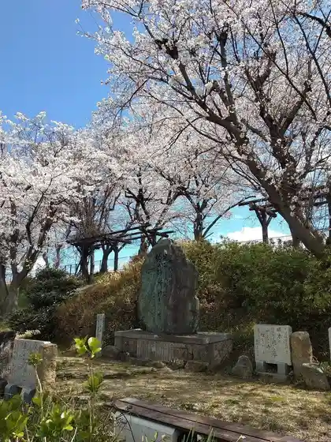
Kinsho Yama Haikingukosu
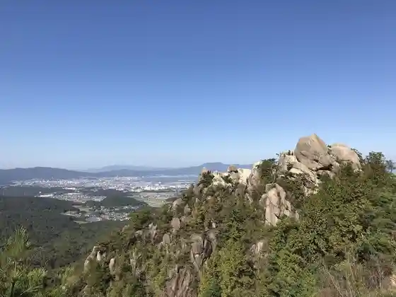
Ono Shrine
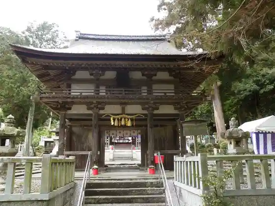
Konze no Sato Bangaro Village
Roadside Station Aguri no Sato Ritto
Ritto Tourist Information
Jiyama Burial Mound
Anyoji Yama Kanko Doro
Ritto Tami Gym Ritto Sports Park
Kinsho Tera
Wada Kofun Gun
Shin Zenkoji
Naki Jizo
Nandasaka Koma Saka Ishidan
Kin Shrine
Te Hara SL Park
Ritto Yasu Kawa Gym Ritto Yasu Kawa Sports Park
Ritto Ritsu Shizentai Ken Gakushu Center (Mori no Mirai Kan)
Ritto Nature Kansatsu Forest
Koma Saka Magai Hotoke
Kinsho Sankei
Uwa Miya Shrine
Kontai Tera
Kyu Wachu San Honpo
Tsubakiyama Burial Mound
Ritto Kankyo Center
Kuhon Falls
Takashi On Tera
JRA Ritto Toreningu Center
Kasuga Shrine
Yokogamine Tembo Tokoro (Mezu Kannon Domae Chushajo)
JR Te Hara Eki
Ritto Geijutsu Culture Hall Sakira
Oka Iseki
Toreiruadobencha Ritto
Foresutoadobencha Ritto
Konze Tenma Forest
Otsuki Taisha
Toho Yama Anyoji
Roadside Station Konze no Sato Ritto
Mannen Tera
Ritto Rekishi Minzoku Museum
Hyuga Yama (Taki Yama Castle Ruins)
Taiho Shrine